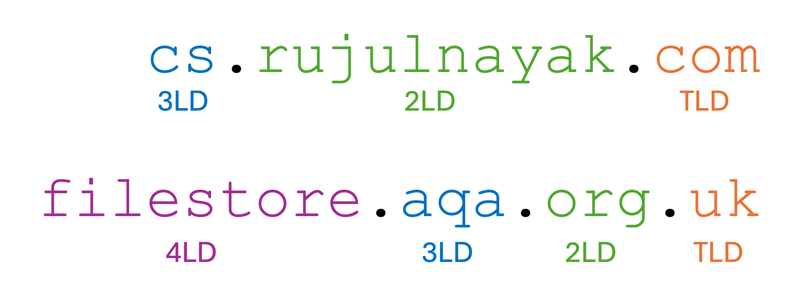

GCSE Link: 5.04 - Network Protocols
 A protocol is a set of rules that defines how devices on a network communicate with each other.
A protocol is a set of rules that defines how devices on a network communicate with each other.
The protocols involved in sending data across networks can be grouped into "layers".
Table 1 shows the protocol layers.
 Table 1
Table 1
| Layer | Description | Protocols |
|---|---|---|
| Application | Protocols in the application layer create the data that is being sent and interpret the data that is being received. | HTTP(S), FTP, SMTP, POP3, SSH |
| Transport | Protocols in the transport layer set up communication between hosts. They are also responsible for splitting the data into packets, and reassembling the packets on receipt. | TCP and UDP |
| Network (or Internet) | Protocols in the network layer communicate with routers to make sure the packets reach the correct recipient. | IP |
| Link | Protocols in the link layer physically transmit the data packets from one device to another. | WLAN (Wi-Fi) and Ethernet |
When data is being sent, it starts at the application layer and makes its way down to the link layer. When data is being received, it starts at the link layer and makes its way up to the application layer.
Each protocol will add its own header to the payload that it receives. This means that the final packet of data will look something like this:
Diagram 1 shows the structure of a packet of data.
 Diagram 1
Diagram 1

We will now look at each protocol in detail.
 The HyperText Transfer Protocol (HTTP) is used to transfer webpages between a client (web browser) and web server.
The HyperText Transfer Protocol (HTTP) is used to transfer webpages between a client (web browser) and web server.
The client sends a request (e.g. GET or POST) and the web server sends
a response containing the status code and content of the webpage. Everything is sent in plaintext,
with no encryption.
The HyperText Transfer Protocol Secure (HTTPS) encrypts the request and response using Transport Layer Security (TLS). This makes it more secure and less prone to hacking.
 The File Transfer Protocol (FTP) is used to transfer files between a client and server.
The File Transfer Protocol (FTP) is used to transfer files between a client and server.
Servers can accept connections from multiple clients simultaneously and limit file access to authenticated users or provide anonymous access to any connected user. It is unencrypted by default, but the File Transfer Protocol Secure (FTPS) extension works similarly to HTTPS, encrypting communications using TLS.
 The Simple Mail Transfer Protocol (SMTP) sends emails from a client to a mail server, or between mail servers.
The Simple Mail Transfer Protocol (SMTP) sends emails from a client to a mail server, or between mail servers.
It is a push protocol: it can only send and not receive emails. When an email is sent, SMTP passes the message to a mail server. The message can then be sent around other mail servers until it reaches the recipient's server, at which point it can be retrieved using IMAP or POP3.
 The Post Office Protocol v3 (POP3) retrieves emails from a mail server to a client.
The Post Office Protocol v3 (POP3) retrieves emails from a mail server to a client.
It downloads incoming emails to a local device, then deletes them from the server. This allows users to read emails afterwards even if they are offline.
 The Secure Shell (SSH) protocol allows users to securely connect to and manage remote systems.
The Secure Shell (SSH) protocol allows users to securely connect to and manage remote systems.
It encrypts all data between the client and server, and also performs authentication. SSH is commonly used by network administrators.
 The Transmission Control Protocol (TCP) provides reliable, ordered delivery of packets.
The Transmission Control Protocol (TCP) provides reliable, ordered delivery of packets.
It first establishes a connection with the receiving device. Then, it splits the data into numbered packets. When the packets arrive at the destination, the receiving device sends an acknowledgement. Any packets that did not arrive are re-sent. At the other end, the packets are reassembled in order.
 The User Datagram Protocol (UDP) sends data quickly without guaranteeing delivery.
The User Datagram Protocol (UDP) sends data quickly without guaranteeing delivery.
Each packet is sent independently. There is no ordering or acknowledgement. This is useful in cases where speed is more important than reliability, for example livestreaming or gaming.
 The Internet Protocol (IP) handles the routing of packets.
The Internet Protocol (IP) handles the routing of packets.
Each network device is assigned a unique IP address. When a packet of data is to be transmitted, a header is attached, containing the IP addresses of the source and destination devices, a checksum and a time to live (TTL) value, which is decremented at each step. If the TTL value reaches 0, the packet is discarded (this is to prevent infinite cycles).
There are two standards of IP addresses:
0-255
numbers separated by dots, like 192.168.0.1
0-ffff
numbers separated by colons, like 2001:db8:0:0:0:8a2e:370:7334
IPv4 only allows for a maximum of 232 (about 4.3 billion) addresses, while IPv6
allows for 2128 (340 undecillion, which is 340 billion billion billion billion)
addresses.
We will learn more about IP addresses on the next page.
 Wi-Fi is a family of related protocols which handle the physical transmission of data as radio waves.
Wi-Fi is a family of related protocols which handle the physical transmission of data as radio waves.
It uses two radio frequency bands: 2.4GHz (which has a greater range and is better at getting through walls)
and 5GHz (which is faster over shorter distances).
 Ethernet is a family of related protocols which handle the physical transmission of data as electrical currents.
Ethernet is a family of related protocols which handle the physical transmission of data as electrical currents.
While Wi-Fi is specifically for wireless connections, Ethernet is specifically for wired connections.
Each device's Network Interface Card (NIC) has a unique Media Access Control (MAC) address. Ethernet uses MAC addresses to route packets between different network interfaces on a local area network, while IP uses IP addresses to route data between networks.
 If a single device has multiple applications sending and receiving data, how does it know which application incoming data is meant for?
If a single device has multiple applications sending and receiving data, how does it know which application incoming data is meant for?
Each process is assigned a unique port number which is sent in the TCP or UDP packet, as we will see on the next page.